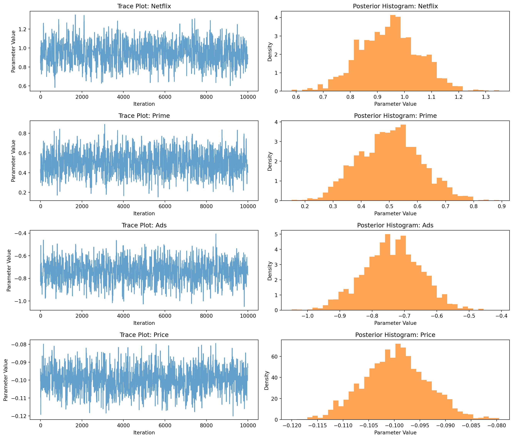

Reading conjoint_data
import pandas as pd
data=pd.read_csv("conjoint_data.csv")
data.head()| resp | task | choice | brand | ad | price | |
|---|---|---|---|---|---|---|
| 0 | 1 | 1 | 1 | N | Yes | 28 |
| 1 | 1 | 1 | 0 | H | Yes | 16 |
| 2 | 1 | 1 | 0 | P | Yes | 16 |
| 3 | 1 | 2 | 0 | N | Yes | 32 |
| 4 | 1 | 2 | 1 | P | Yes | 16 |
Lulu Ling
May 18, 2025
The “hard part” of the MNL likelihood function is organizing the data, as we need to keep track of 3 dimensions (consumer \(i\), covariate \(k\), and product \(j\)) instead of the typical 2 dimensions for cross-sectional regression models (consumer \(i\) and covariate \(k\)). The fact that each task for each respondent has the same number of alternatives (3) helps. In addition, we need to convert the categorical variables for brand and ads into binary variables.
| resp | task | choice | brand | ad | price | |
|---|---|---|---|---|---|---|
| 0 | 1 | 1 | 1 | N | Yes | 28 |
| 1 | 1 | 1 | 0 | H | Yes | 16 |
| 2 | 1 | 1 | 0 | P | Yes | 16 |
| 3 | 1 | 2 | 0 | N | Yes | 32 |
| 4 | 1 | 2 | 1 | P | Yes | 16 |
| Variable | Description |
|---|---|
resp |
respondent number |
task |
the number of selected tasks |
choice |
whether it is selected (1=selected, 0=not selected) |
brand |
Is theree an advertisement (Yes / No) |
price |
price of the set |
Organize this information into a format that can be used in the MNL model, including:
| resp | task | brand_N | brand_P | ad_Yes | price | choice | |
|---|---|---|---|---|---|---|---|
| 0 | 1 | 1 | True | False | True | 28 | 1 |
| 1 | 1 | 1 | False | False | True | 16 | 0 |
| 2 | 1 | 1 | False | True | True | 16 | 0 |
| 3 | 1 | 2 | True | False | True | 32 | 0 |
| 4 | 1 | 2 | False | True | True | 16 | 1 |
from IPython.display import display, Math
utility_formula = r"U_{ij} = x_{ij}^\top \beta + \varepsilon_{ij}"
probability_formula = r"P_{ij} = \frac{e^{x_{ij}^\top \beta}}{\sum_{k=1}^J e^{x_{ik}^\top \beta}}"
loglikelihood_formula = r"\log L(\beta) = \sum_{i=1}^n \sum_{j=1}^J \delta_{ij} \log(P_{ij})"
delta_explanation = r"\delta_{ij} = \begin{cases} 1 & \text{if individual } i \text{ chooses option } j \\ 0 & \text{otherwise} \end{cases}"
display(Math(utility_formula))
display(Math(probability_formula))
display(Math(loglikelihood_formula))
display(Math(delta_explanation))\(\displaystyle U_{ij} = x_{ij}^\top \beta + \varepsilon_{ij}\)
\(\displaystyle P_{ij} = \frac{e^{x_{ij}^\top \beta}}{\sum_{k=1}^J e^{x_{ik}^\top \beta}}\)
\(\displaystyle \log L(\beta) = \sum_{i=1}^n \sum_{j=1}^J \delta_{ij} \log(P_{ij})\)
\(\displaystyle \delta_{ij} = \begin{cases} 1 & \text{if individual } i \text{ chooses option } j \\ 0 & \text{otherwise} \end{cases}\)
import numpy as np
def mnl_log_likelihood(beta, X, y):
"""
beta: 參數向量 (K,)
X: 設計矩陣，形狀為 (n_obs, K)
y: choice 向量，形狀為 (n_obs,) 為 0/1 結果
"""
# reshape：每組 3 個選項一組（假設每個 respondent-task 有 3 選項）
n_choices = 3
X_reshaped = X.reshape(-1, n_choices, X.shape[1])
y_reshaped = y.reshape(-1, n_choices)
# 效用與機率
utilities = X_reshaped @ beta
exp_util = np.exp(utilities)
probs = exp_util / exp_util.sum(axis=1, keepdims=True)
# 將選中的那一項的機率取出，然後取 log 相加
chosen_probs = (probs * y_reshaped).sum(axis=1)
log_lik = np.sum(np.log(chosen_probs))
return -log_liktodo: Use optim() in R or scipy.optimize() in Python to find the MLEs for the 4 parameters (\(\beta_\text{netflix}\), \(\beta_\text{prime}\), \(\beta_\text{ads}\), \(\beta_\text{price}\)), as well as their standard errors (from the Hessian). For each parameter construct a 95% confidence interval.
Parameter estimation of the multinomial logit (MNL) model:
from scipy.optimize import minimize
import numpy as np
def neg_log_likelihood(beta, X, y):
return mnl_log_likelihood(beta, X, y)
beta0 = np.zeros(4)
X_np = X[["brand_N", "brand_P", "ad_Yes", "price"]].astype(float).values
y_np = X["choice"].values
result = minimize(neg_log_likelihood, beta0, args=(X_np, y_np), method='BFGS')
mle = result.x
hessian_inv = result.hess_inv
se = np.sqrt(np.diag(hessian_inv))
z = 1.96
ci_lower = mle - z * se
ci_upper = mle + z * se
summary = pd.DataFrame({
"Parameter": ["Netflix", "Prime", "Ads", "Price"],
"Estimate": mle,
"Std. Error": se,
"95% CI Lower": ci_lower,
"95% CI Upper": ci_upper
})
summary| Parameter | Estimate | Std. Error | 95% CI Lower | 95% CI Upper | |
|---|---|---|---|---|---|
| 0 | Netflix | 0.941195 | 0.114003 | 0.717748 | 1.164642 |
| 1 | Prime | 0.501616 | 0.120829 | 0.264791 | 0.738441 |
| 2 | Ads | -0.731994 | 0.088553 | -0.905558 | -0.558430 |
| 3 | Price | -0.099480 | 0.006357 | -0.111941 | -0.087020 |
todo: code up a metropolis-hasting MCMC sampler of the posterior distribution. Take 11,000 steps and throw away the first 1,000, retaining the subsequent 10,000.
Metropolis-Hastings is one of the most common Markov chain Monte Carlo (MCMC) algorithms, often used for parameter estimation under difficult-to-analyze posterior distributions.
from IPython.display import display, Math
# Define LaTeX formulas for the MCMC process
log_posterior_eq = r"\log \text{posterior}(\beta) = \log L(\beta) + \log \text{prior}(\beta)"
log_likelihood_eq = r"\log L(\beta): \text{ Use the log-likelihood from the MNL model}"
log_prior_eq = r"\log \text{prior}(\beta): \text{ Typically assume } \beta \sim N(0, \sigma^2)"
mh_step_1 = r"\text{1. Initialize } \beta^{(0)}"
mh_step_2 = r"\text{2. Propose } \beta^* \sim q(\cdot | \beta^{(t)})"
mh_step_3 = r"A = \min\left(1, \frac{\text{posterior}(\beta^*)}{\text{posterior}(\beta^{(t)})} \right)"
mh_step_4 = r"\text{4. Accept or reject based on } A"
mh_step_5 = r"\text{5. Repeat for 11,000 steps; discard the first 1,000 as burn-in}"
# Display the math expressions
display(Math(log_posterior_eq))
display(Math(log_likelihood_eq))
display(Math(log_prior_eq))
display(Math(mh_step_1))
display(Math(mh_step_2))
display(Math(mh_step_3))
display(Math(mh_step_4))
display(Math(mh_step_5))\(\displaystyle \log \text{posterior}(\beta) = \log L(\beta) + \log \text{prior}(\beta)\)
\(\displaystyle \log L(\beta): \text{ Use the log-likelihood from the MNL model}\)
\(\displaystyle \log \text{prior}(\beta): \text{ Typically assume } \beta \sim N(0, \sigma^2)\)
\(\displaystyle \text{1. Initialize } \beta^{(0)}\)
\(\displaystyle \text{2. Propose } \beta^* \sim q(\cdot | \beta^{(t)})\)
\(\displaystyle A = \min\left(1, \frac{\text{posterior}(\beta^*)}{\text{posterior}(\beta^{(t)})} \right)\)
\(\displaystyle \text{4. Accept or reject based on } A\)
\(\displaystyle \text{5. Repeat for 11,000 steps; discard the first 1,000 as burn-in}\)
def mnl_log_posterior(beta, X, y):
return -mnl_log_likelihood(beta, X, y)
def metropolis_hastings(log_posterior, initial, steps, proposal_cov, X, y):
n_params = len(initial)
samples = np.zeros((steps, n_params))
current = initial.copy()
current_log_post = log_posterior(current, X, y)
accept_count = 0
for i in range(steps):
proposal = np.random.multivariate_normal(current, proposal_cov)
proposal_log_post = log_posterior(proposal, X, y)
log_accept_ratio = proposal_log_post - current_log_post
if np.log(np.random.rand()) < log_accept_ratio:
current = proposal
current_log_post = proposal_log_post
accept_count += 1
samples[i] = current
acceptance_rate = accept_count / steps
return samples, acceptance_rate
proposal_cov = hessian_inv * 2.0
mcmc_steps = 11000
initial_beta = mle
samples, acc_rate = metropolis_hastings(
mnl_log_posterior, initial_beta, mcmc_steps, proposal_cov, X_np, y_np
)
mcmc_samples = samples[1000:]
print(f"Acceptance rate: {acc_rate:.3f}")Acceptance rate: 0.220The trace plot of the algorithm and the histogram of the posterior distribution.
import matplotlib.pyplot as plt
param_names = ["Netflix", "Prime", "Ads", "Price"]
fig, axes = plt.subplots(4, 2, figsize=(14, 12))
for i, name in enumerate(param_names):
# Trace plot
axes[i, 0].plot(mcmc_samples[:, i], color='tab:blue', alpha=0.7)
axes[i, 0].set_title(f"Trace Plot: {name}")
axes[i, 0].set_xlabel("Iteration")
axes[i, 0].set_ylabel("Parameter Value")
# Posterior histogram
axes[i, 1].hist(mcmc_samples[:, i], bins=40, color='tab:orange', alpha=0.7, density=True)
axes[i, 1].set_title(f"Posterior Histogram: {name}")
axes[i, 1].set_xlabel("Parameter Value")
axes[i, 1].set_ylabel("Density")
plt.tight_layout()
plt.show()
todo: report the 4 posterior means, standard deviations, and 95% credible intervals and compare them to your results from the Maximum Likelihood approach.
posterior_means = mcmc_samples.mean(axis=0)
posterior_stds = mcmc_samples.std(axis=0)
posterior_ci_lower = np.percentile(mcmc_samples, 2.5, axis=0)
posterior_ci_upper = np.percentile(mcmc_samples, 97.5, axis=0)
bayes_summary = pd.DataFrame({
"Parameter": param_names,
"Posterior Mean": posterior_means,
"Posterior Std": posterior_stds,
"95% CrI Lower": posterior_ci_lower,
"95% CrI Upper": posterior_ci_upper,
"MLE": summary["Estimate"].values,
"MLE Std. Error": summary["Std. Error"].values,
"MLE 95% CI Lower": summary["95% CI Lower"].values,
"MLE 95% CI Upper": summary["95% CI Upper"].values
})
bayes_summary| Parameter | Posterior Mean | Posterior Std | 95% CrI Lower | 95% CrI Upper | MLE | MLE Std. Error | MLE 95% CI Lower | MLE 95% CI Upper | |
|---|---|---|---|---|---|---|---|---|---|
| 0 | Netflix | 0.944908 | 0.110447 | 0.732558 | 1.156386 | 0.941195 | 0.114003 | 0.717748 | 1.164642 |
| 1 | Prime | 0.501977 | 0.110255 | 0.292830 | 0.718514 | 0.501616 | 0.120829 | 0.264791 | 0.738441 |
| 2 | Ads | -0.738658 | 0.088668 | -0.918585 | -0.569924 | -0.731994 | 0.088553 | -0.905558 | -0.558430 |
| 3 | Price | -0.099684 | 0.006296 | -0.111765 | -0.087415 | -0.099480 | 0.006357 | -0.111941 | -0.087020 |
todo: Suppose you did not simulate the data. What do you observe about the parameter estimates? What does \(\beta_\text{Netflix} > \beta_\text{Prime}\) mean? Does it make sense that \(\beta_\text{price}\) is negative?
todo: At a high level, discuss what change you would need to make in order to simulate data from — and estimate the parameters of — a multi-level (aka random-parameter or hierarchical) model. This is the model we use to analyze “real world” conjoint data.